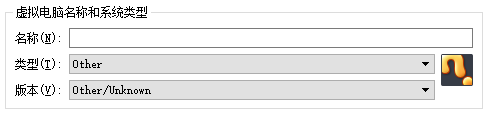
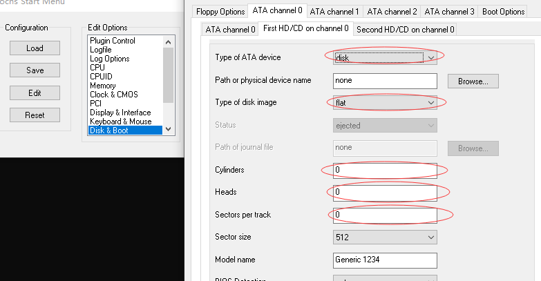
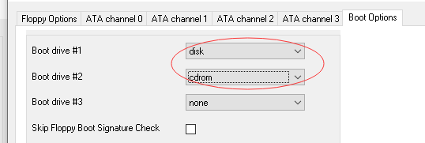
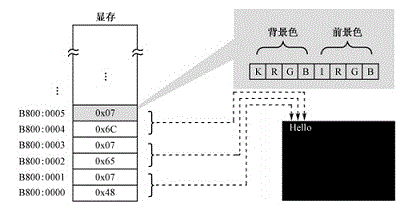
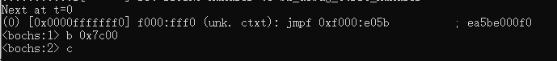
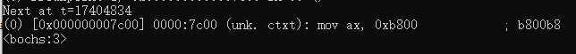
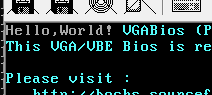

1. 简述
操作系统带来便利的同时也引入了大量限制，在操作系统存在时，我们编写的程序不能直接被硬件加载。我们必须按照操作系统的约定，把程序编译成特定的可执行文件格式（比如Windows的PE文件格式，Linux的ELF文件格式）。执行程序时，由操作系统读取可执行文件，选择合适的内存空间，并将代码和数据加载到内存中相应位置，这样程序才能被处理器所执行，在程序执行过程中遇到诸如I/O之类的操作，还必须进行系统调用，由操作系统完成这些操作。为了了解底层工作原理，尝试跨过操作系统直接运行程序，控制硬件，使用虚拟机是最方便的选择。
2. Oracle VM VirtualBox
- 首先是下载和安装软件，VirtualBox 免费使用，没什么可说的
- 创建虚拟机
要注意两点，第一个是不要安装任何操作系统（裸机试验环境嘛，肯定是不想要操作系统的）

另一方面是创建虚拟硬盘，为了方便我们选择固定大小的VHD格式的虚拟硬盘，此时虚拟硬盘就是一个结构很简单的二进制文件，前面是数据区，结尾是一个512字节的信息区。
因为只是做简单的汇编实验，硬盘大小有30M左右就足够了，这个根据实际需求来选择。
修改启动顺序，因为我们想把程序写入VHD虚拟硬盘的启动扇区里直接开机运行，因此要把从硬盘启动排在最前面。
3. bochs
其实只要 VirtualBox 已经足够了，但是如果想要更方便地调试程序，检测程序执行过程中的寄存器和内存变化，bochs 是一个很优秀的选择。
- 下载安装仍然很简单，bochs是开源免费的软件，直接装就可以了，如果使用linux，大多数发型版都可以直接从源内获取相应的二进制包。
- 设置虚拟机，和上面处理 VirtualBox 类似，重点还是设置硬盘和启动顺序，不过此处我们不必重新创建虚拟硬盘，直接使用上一步 VirtualBox 创建好的那个就行。配置方法可以使用图形界面编辑，也可以直接通过文本编辑器修改配置文件。需要修改的地方如下图：


设置好之后，别忘了保存为配置文件，以后每次打开虚拟机的时候就可以直接载入相应配置文件来启用这个配置，不用每次都改。
至于编辑配置文件的方法这里就不介绍了，放上有很多介绍配置文件含义的资料，具体参考那些东西就好。
4. 编写代码
终于回到正题了，不过这篇文章并不是介绍汇编语言的（hhhhh）。对与20位地址总线来说，形成虚拟地址空间 0x00000-0xFFFFF ，ROM，主存，其他I/O设备的主存（比如显卡的显存）都被编入这段地址空间中，其中显存的地址范围是从 0xB8000-BFFFF ，我们向这一段地址空间中写入数据就可以操作显卡显示相应的内容。
显卡有彩色模式和文本模式，对于彩色模式来说每个像素对应显存中的一段内存区域（比如三个字节表示一个像素，他们分别代表RGB分量，这就是真彩色模式）。而对于文本来说我们用不着关心像素，只需要考虑待写入字符的ASCII编码就可以。每两个字节表示屏幕上的一个字符，第一个字节放字符编码，第二个字符控制显示模式，从屏幕第一字符开始，它对应显存前两个字节，第二个字符对应第三和第四个字节，以此类推。

现在我们要做的就是直接通过汇编语言来向显存中写入数据。为了实现内存寻址，我们首先要划定段地址，因为显存起始地址是 0xB800 最简单就是令段寄存器 ES=0xB800 ，当然用其他的段寄存器，采用其他的段地址也可以。代码如下：
1 | mov ax, 0xB800 |
我们想把这些代码写入引导扇区里面执行，而一个可以引导的扇区必须以 0x55aa 结束，且扇区大小是512字节（这个是在硬盘设置中定下来的）。
5. 将代码写入扇区
汇编代码的编译通过nasm来完成，该软件是免费的，可以很容易的下载并安装，注意安装好之后配置 path 环境变量到可执行文件目录。
首先是编译代码，我们不希望生成操作系统下的可执行文件，因此要注意可执行文件的目标格式：
nasm -f bin hello.asm -o hello.bin
然后把二进制文件写入VHD虚拟硬盘的引导扇区，VHD的扇区写入工具有很多，随便找一个就可以。需要注意的是CHS和LBA编号之间的区别：
LBA = C*磁头数*扇区数 + H*扇区数 +(S-1)
对于引导扇区来说，就是LBA编号为1的扇区。
6. 运行
对于VirtualBox来说很简单，直接点击启动虚拟机就能看到运行结果：
对于Bochs来说稍微麻烦一些，上电复位字后，代码段寄存器和指令指针为 CS:IP=0xFFFF:0x0000 ，处理器会停在这个位置，而该位置正好输入ROM。通常来说在 0xFFFF0 这个位置存放的是一个跳转指令 jmp 0xF000:0xE05B ，跳转过去之后还有很多ROM代码需要执行，他们负责完成上电自检，查找启动扇区这样的工作，我们不关心这一部分直接跳过去就好。在跳过去之前我们应该先在 0x7C00 这个位置下个断点，因为ROM总是会把启动扇区的代码加载在这个位置，也就是说从 0x7C00 开始就是我们自己编写的代码了。

执行之后结果很长，这里只截取最后一部分：

可以看到，这就是自己编写的第一条汇编指令，考虑到后面有死循环，这里直接执行就好，最终结果如图：

内容到这里就完全结束了~